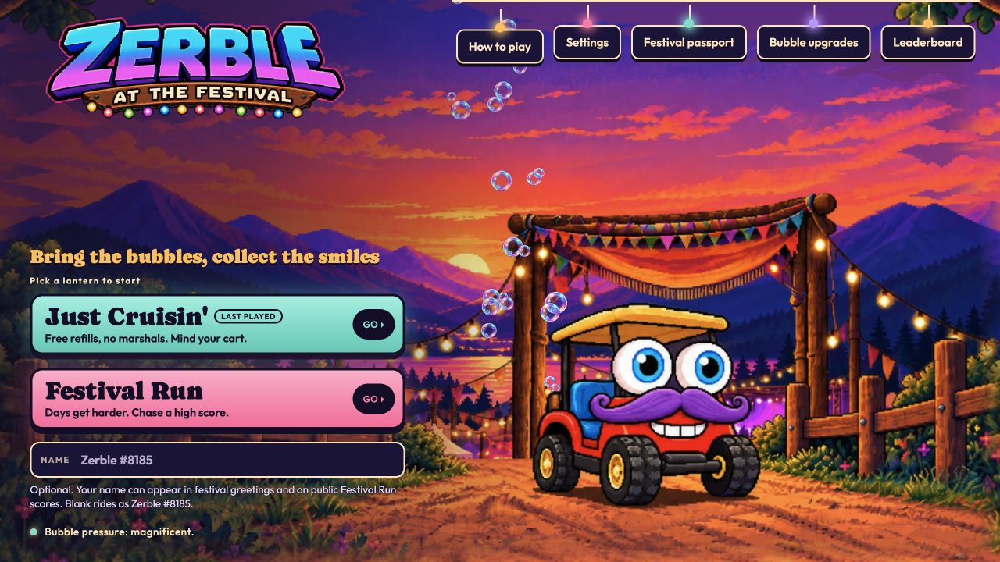
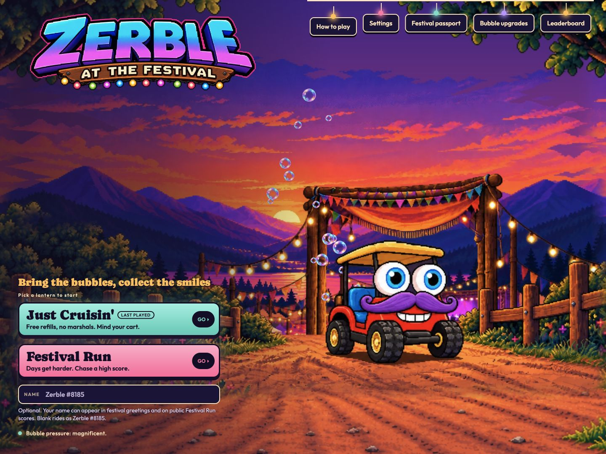
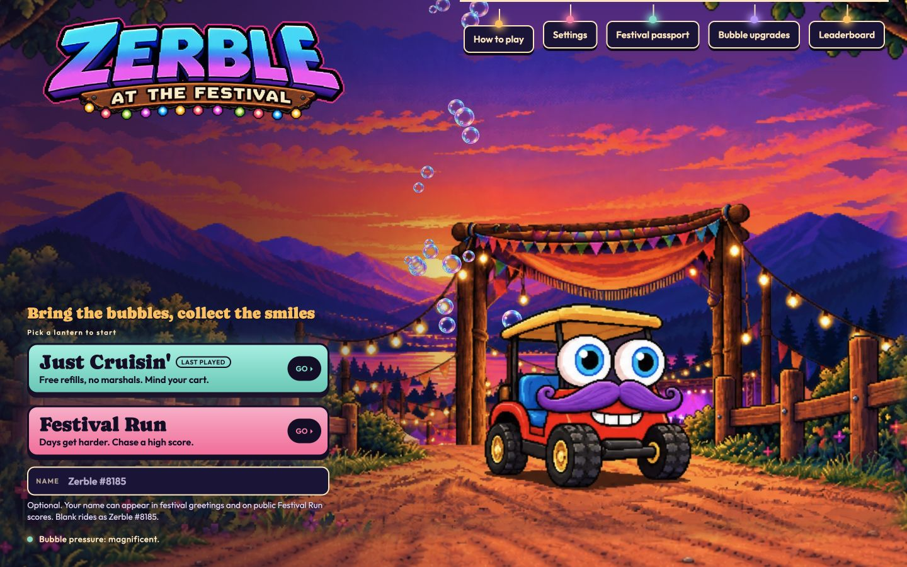
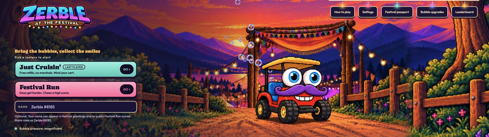
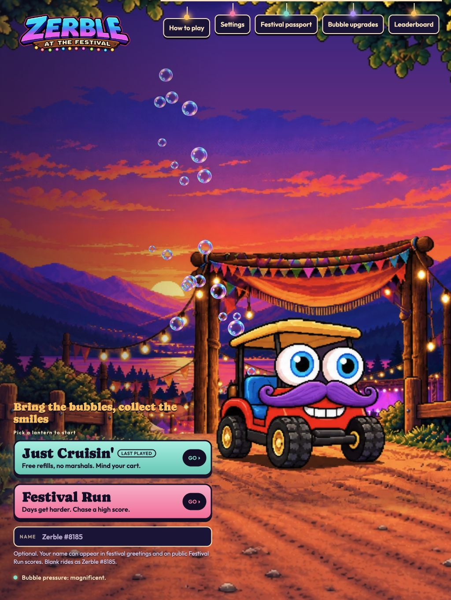
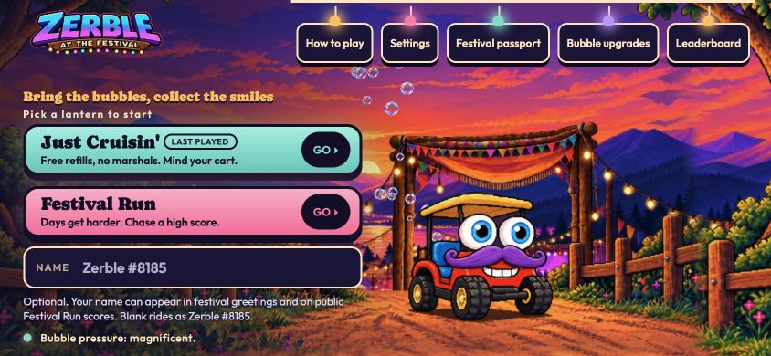
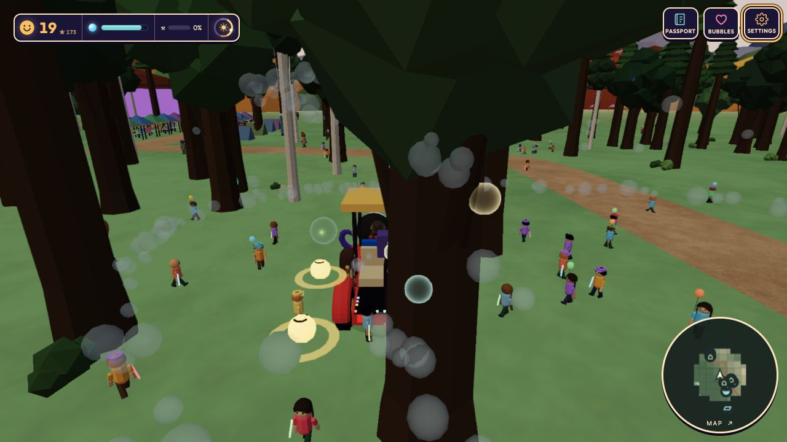
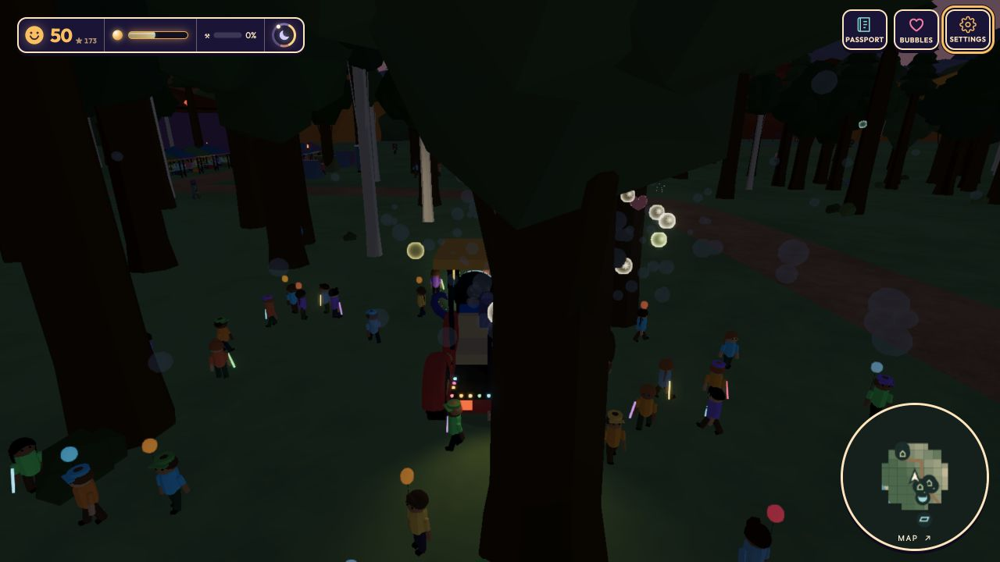

November 15, 2026. Implementation, limits and tests · Generation prompts · Contact sheet
The original gate and Zerble are retained inside independently moving extended scenery groups. Bubbles use the original 24-sprite sizes, timing and curved paths beneath the foreground. Tablet and ultrawide images are desktop viewport checks; the real-game captures use muted Low.







